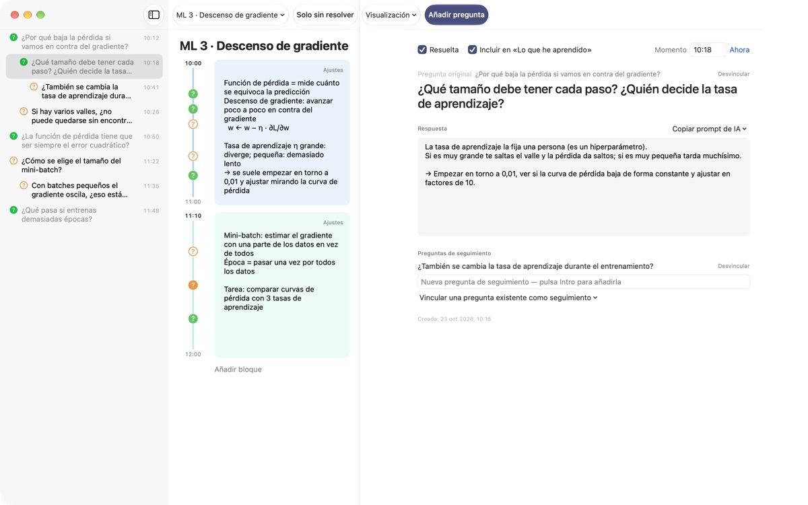
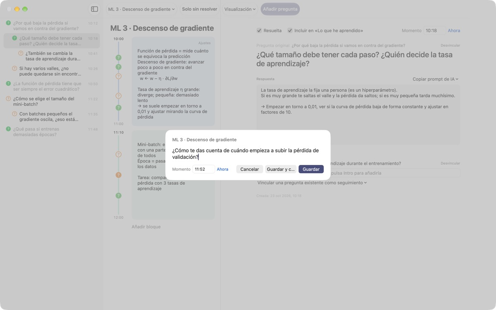
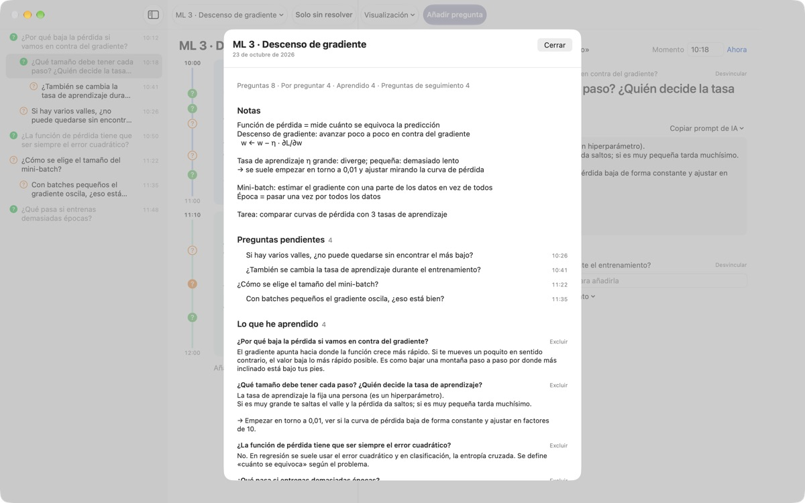
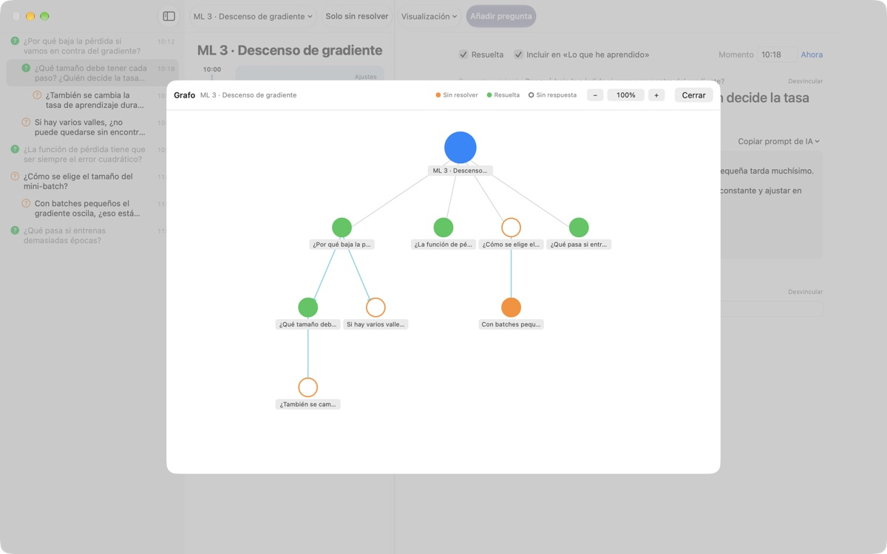

Que ninguna duda de clase
se te escape
Pulsa ⌘⇧N, escribe una línea y la pregunta queda junto a tus notas de ese mismo minuto. Sigues atendiendo y buscas la respuesta después.
Para macOS 14 o posterior. Sin cuenta: todo se queda en este Mac.

Pruébalo aquí
Estás en plena clase de aprendizaje automático. Escribe una pregunta y guárdala: aparece un ? junto al bloque de esa hora. Si cambias la hora a una fuera de los bloques, se crea un bloque nuevo para ella.
¿Al acabar la clase todavía recuerdas la duda?
En cuanto piensas «a ver, ¿y esto por qué?», el profesor ya ha pasado al siguiente punto. El signo de interrogación del margen olvida de qué explicación salió y la duda se queda sin resolver. LectureQ engancha cada pregunta a tus notas de ese momento y la mantiene a la vista hasta que la resuelvas.
Pregunta sin perderte la siguiente frase
Abre la ventana de entrada con Añadir pregunta en la barra de herramientas o con ⌘⇧N. La hora se rellena sola. Retorno guarda, y ⌘Retorno guarda y te deja listo para la siguiente.
Cada pregunta aparece como un ? junto a su bloque de tiempo, así que luego ves enseguida de qué parte de la clase salió.

Lo que resuelves se convierte en lo aprendido
Escribe la respuesta con tus palabras, márcala como resuelta y pasa a Lo que he aprendido en el resumen. Lo que sigue abierto queda en Preguntas pendientes, y tu lista para la próxima clase se arma sola.Copiar prompt de IA, en el detalle de la pregunta, deja en el portapapeles un prompt listo con el nombre de la clase y tus notas de ese momento. Solo tienes que pegarlo en el servicio de IA que ya uses.

Mira por dónde fue tu razonamiento
Las preguntas de seguimiento se apilan con sangría bajo la pregunta de la que salieron, y el grafo las une con flechas. Haz clic en un nodo para ir directo a esa pregunta.
En Estado de aprendizaje puedes anotar dónde estás, dónde quieres estar al terminar el curso y qué quieres aprender, y compararlo.

Empezar lleva tres pasos
- 1
Crea una clase
Desde el menú de clases a la izquierda de la barra de herramientas, o importa una conversación guardada en Markdown.
- 2
Apunta en cuanto surja
Pulsa
⌘⇧N. Con una línea basta y la hora ya está puesta. - 3
Respóndela después
Escribe la respuesta y haz clic en el ? para marcarla como resuelta. Pasa a Lo que he aprendido.
Atajos de teclado
- ⌘⇧N
- Añadir pregunta
- Return
- Guardar
- ⌘Return
- Guardar y escribir la siguiente
- Esc
- Cancelar
- ⌘1
- Resumen: preguntas pendientes, lo aprendido, notas
- ⌘2
- Grafo: preguntas originales y de seguimiento
- ⌘3
- Bloques de tiempo: los de todas las clases, en orden
- ⌘4
- Estado de aprendizaje
- ⌘+ · ⌘- · ⌘0
- Texto más grande, más pequeño, tamaño por omisión
Todos están también en el menú Visualización.
Todas las funciones son gratis
Gratis
- Preguntas rápidas y notas por bloques de tiempo
- Preguntas de seguimiento y grafo
- Resumen, vista de bloques y Estado de aprendizaje
- Prompts de IA en cinco pasos, copiados al portapapeles
- Importar conversaciones en Markdown
Apoya al desarrollador
- Si la app te sirve, envía una pequeña propina desde Ajustes
- La propina no desbloquea nada extra
Con propina o sin ella, todo funciona igual.
Sin anuncios ni cuenta. Tus notas se quedan en este Mac.
Preguntas frecuentes
¿Qué significan los colores del ?
En la lista, un círculo naranja vacío es una pregunta sin resolver y uno verde relleno, una resuelta. Haz clic en el ? para cambiarla, y activa Solo sin resolver en la barra de herramientas para ver solo las abiertas. Junto a un bloque de tiempo, el color indica si está resuelta y el círculo relleno, que ya tiene respuesta escrita.
¿Cómo funcionan los bloques de tiempo?
Con Añadir bloque empieza un bloque nuevo en ese momento y el anterior termina ahí. Si anotas una pregunta a una hora que ningún bloque cubre, se crea uno a su alrededor. Con Ajustes, arriba a la derecha del bloque, cambias su color, inicio y duración o lo eliminas. Si eliminas un bloque tú mismo, esa clase deja de crear bloques automáticamente.
¿En qué se diferencian «Resuelta» y «Lo que he aprendido»?
Al marcar Resuelta en el detalle de la pregunta, eliges también si cuenta para Lo que he aprendido. Ahí solo aparecen las resueltas que hayas incluido. También puedes quitarlas o volver a añadirlas desde el resumen; la respuesta se conserva igual.
¿Cómo funcionan los prompts de IA?
En el detalle de la pregunta, abre Copiar prompt de IA junto a Respuesta y elige un paso: Pulir la pregunta, Buscar la respuesta, Cuestionar la respuesta, Sacar preguntas de seguimiento o Que califiquen mi respuesta. Se copia al portapapeles un prompt con el nombre de la clase, tus notas de ese momento, tu estado de aprendizaje y la pregunta original. Por ahora el texto del prompt está en coreano; la mayoría de los servicios de IA lo entienden igualmente y puedes pedir la respuesta en español. Para que califiquen tu respuesta, primero tienes que haberla escrito. La app nunca se conecta por sí sola a un servicio de IA.
¿Puedo importar una conversación guardada en Markdown?
Elige Importar desde Markdown… en el menú de clases. # Título pasa a ser el nombre de la clase, y en cada ## Sección la primera pregunta es la original y las siguientes, de seguimiento. Lo que dice quien habla primero en el archivo se convierte en preguntas, y lo de los demás, en la respuesta a la pregunta anterior. El archivo original no se modifica.
¿Cómo elimino una pregunta o una clase?
Haz clic secundario en la pregunta de la lista y elige Eliminar. Para una clase, usa Eliminar la clase actual en el menú de clases; con ella se van sus preguntas y bloques. No se puede deshacer, así que haz antes una copia de lo importante.
¿Dónde se guardan mis datos y cómo hago una copia?
Todo se queda en este Mac y no se sube a ningún sitio. Para hacer una copia, cierra la app y copia la carpeta completa ~/Library/Containers/com.lectureq.LectureQ/Data/Library/Application Support/LectureQ/ con los archivos -wal y -shm. La app solo envía estadísticas de uso anónimas, como la versión y los días en que la abriste, nunca lo que escribes.
La letra es muy pequeña.
⌘+ la agranda, ⌘- la reduce y ⌘0 la devuelve al tamaño normal. Va del 85 % al 200 % y se recuerda.
¿En qué Mac funciona?
En cualquier Mac con macOS 14 o posterior. El código fuente es público en GitHub, en M1zz/LectureQ.
Algo no funciona. ¿A quién se lo digo?
Envía tus comentarios desde los Ajustes (⌘,) de la app o escribe a la dirección de abajo. Si nos dices tu versión de macOS y qué estabas haciendo, lo revisaremos antes.
¿Dudas o comentarios? Escribe a mizzking75@gmail.com.